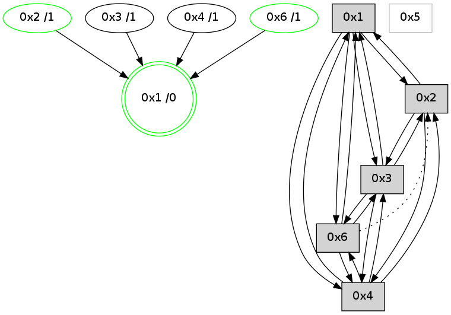

>> << IDX [start] -100 -25 -5 +0 +5 +25 [1210.30938506]
 Previous packets
----------------------------------------------------------------------
1205.286855 beacon01(adaf) #0 coord=01,02,05,03,04,06 cycle=944.0ms assoc
-- color-indic=0 64 3e 60
1205.296815 beacon02(adaf) #0 coord=01,02,05,03,04,06 cycle=944.0ms assoc 64 6f 9f
1205.306816 beacon05(adaf) #0 coord=01,02,05,03,04,06 cycle=944.0ms assoc 64 c9 b5
1205.316815 beacon03(adaf) #0 coord=01,02,05,03,04,06 cycle=944.0ms assoc 64 55 91
1205.326816 beacon04(adaf) #0 coord=01,02,05,03,04,06 cycle=944.0ms assoc 64 f3 bb
1205.336816 beacon06(adaf) #0 coord=01,02,05,03,04,06 cycle=944.0ms assoc 64 87 a7
1205.348521 [Hello(2): seq=1462 sym=3,1,4 color=13 sysInfo=hasWarning,MaxColorIndicationCalled,ColoringModeIndicationCalled,MaxColorResponseCalled stat=3:13,0,3,0/1:8,7,14,0/4:6,0,2,0]
1205.352405 [Hello(4): seq=974 sym=2,1,3,6 sysInfo=hasWarning stat=2:3,0,1,0/1:2,11,14,0/3:2,0,6,0/6:9,0,4,0]
1205.356168 [STC(4)->1 #0.215 new-neigh,tree-change,inconsistent-stability,to-color d=1]
----------------------------------------------------------------------
1206.291361 beacon01(adaf) #0 coord=01,02,05,03,04,06 cycle=944.0ms assoc
-- color-indic=0 64 73 67
1206.301322 beacon02(adaf) #0 coord=01,02,05,03,04,06 cycle=944.0ms assoc 64 22 98
1206.311322 beacon05(adaf) #0 coord=01,02,05,03,04,06 cycle=944.0ms assoc 64 84 b2
1206.321323 beacon03(adaf) #0 coord=01,02,05,03,04,06 cycle=944.0ms assoc 64 18 96
1206.331322 beacon04(adaf) #0 coord=01,02,05,03,04,06 cycle=944.0ms assoc 64 be bc
1206.341324 beacon06(adaf) #0 coord=01,02,05,03,04,06 cycle=944.0ms assoc 64 ca a0
1206.353023 [Hello(3): seq=975 sym=6,2,1,4 color=2 sysInfo=hasWarning,MaxColorIndicationCalled,ColoringModeIndicationCalled,MaxColorResponseCalled stat=6:12,0,3,0/2:1,0,1,0/1:3,15,13,1/4:10,10,5,1]
1206.358374 [Hello(1): seq=878 sym=2,4,6,3 color=0 sysInfo=hasWarning,MaxColorIndicationCalled,MaxColorResponseCalled,MaxColorRequestCalled,ColoringModeRequestCalled stat=2:5,3,6,0/4:5,0,2,0/6:5,2,11,0/3:3,0,3,0]
----------------------------------------------------------------------
1207.295867 beacon01(adaf) #0 coord=01,02,05,03,04,06 cycle=944.0ms assoc
-- color-indic=0 64 b7 08
1207.305827 beacon02(adaf) #0 coord=01,02,05,03,04,06 cycle=944.0ms assoc 64 e6 f7
1207.315828 beacon05(adaf) #0 coord=01,02,05,03,04,06 cycle=944.0ms assoc 64 40 dd
1207.325827 beacon03(adaf) #0 coord=01,02,05,03,04,06 cycle=944.0ms assoc 64 dc f9
1207.335828 beacon04(adaf) #0 coord=01,02,05,03,04,06 cycle=944.0ms assoc 64 7a d3
1207.345829 beacon06(adaf) #0 coord=01,02,05,03,04,06 cycle=944.0ms assoc 64 0e cf
1207.357519 [Hello(4): seq=975 sym=2,1,3,6 sysInfo=hasWarning stat=2:3,0,1,0/1:3,11,14,0/3:3,0,6,0/6:9,0,4,0]
----------------------------------------------------------------------
1208.300372 beacon01(adaf) #0 coord=01,02,05,03,04,06 cycle=944.0ms assoc
-- color-indic=0 64 fb b8
1208.310333 beacon02(adaf) #0 coord=01,02,05,03,04,06 cycle=944.0ms assoc 64 aa 47
1208.320335 beacon05(adaf) #0 coord=01,02,05,03,04,06 cycle=944.0ms assoc 64 0c 6d
1208.330333 beacon03(adaf) #0 coord=01,02,05,03,04,06 cycle=944.0ms assoc 64 90 49
1208.340333 beacon04(adaf) #0 coord=01,02,05,03,04,06 cycle=944.0ms assoc 64 36 63
1208.350333 beacon06(adaf) #0 coord=01,02,05,03,04,06 cycle=944.0ms assoc 64 42 7f
1208.361728 [Hello(1): seq=879 sym=2,4,6,3 color=0 sysInfo=hasWarning,MaxColorIndicationCalled,MaxColorResponseCalled,MaxColorRequestCalled,ColoringModeRequestCalled stat=2:6,3,6,0/4:5,0,2,0/6:5,2,11,0/3:3,0,3,0]
1208.365684 [Hello(3): seq=976 sym=6,2,1,4 color=2 sysInfo=hasWarning,MaxColorIndicationCalled,ColoringModeIndicationCalled,MaxColorResponseCalled stat=6:13,0,3,0/2:1,0,1,0/1:4,15,13,1/4:10,10,5,1]
1208.368197 [STC(1) #0.216 new-neigh,tree-change,inconsistent-stability,stable,to-color d=0]
----------------------------------------------------------------------
1209.304881 beacon01(adaf) #0 coord=01,02,05,03,04,06 cycle=944.0ms assoc
-- color-indic=0 64 3f d7
1209.314843 beacon02(adaf) #0 coord=01,02,05,03,04,06 cycle=944.0ms assoc 64 6e 28
1209.324842 beacon05(adaf) #0 coord=01,02,05,03,04,06 cycle=944.0ms assoc 64 c8 02
1209.334842 beacon03(adaf) #0 coord=01,02,05,03,04,06 cycle=944.0ms assoc 64 54 26
1209.344843 beacon04(adaf) #0 coord=01,02,05,03,04,06 cycle=944.0ms assoc 64 f2 0c
1209.354843 beacon06(adaf) #0 coord=01,02,05,03,04,06 cycle=944.0ms assoc 64 86 10
1209.366387 [STC(3)->1 #0.216 new-neigh,tree-change,inconsistent-stability,to-color d=1]
1209.370448 [Hello(4): seq=976 sym=2,1,3,6 sysInfo=hasWarning stat=2:3,0,1,0/1:4,11,15,0/3:4,0,6,0/6:9,0,4,0]
1209.372221 [Hello(6): seq=892 sym=4,3,1 asym=2 color=3 sysInfo=hasWarning,MaxColorIndicationCalled,ColoringModeIndicationCalled,MaxColorResponseCalled stat=4:11,5,9,1/3:9,0,2,0/1:3,13,9,0/2:1,0,0,0]
1209.374096 [STC(2)->1 #0.216 new-neigh,tree-change,inconsistent-stability,stable,to-color d=1]
1209.375914 [STC(4)->1 #0.216 new-neigh,tree-change,inconsistent-stability,to-color d=1]
1209.377274 [STC(6)->1 #0.216 new-neigh,tree-change,inconsistent-stability,stable,to-color d=1]